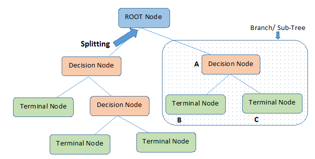

Machine Learning methods ( ML )
The machine learning is a scientific discipline that explores the construction and the study of algorithms that can learn from data, such as the random forest algorithms and neural networks.
1. Random Forest (RF)
1.1. Definition of RF
Random forests are methods for obtaining predictive models for classification and regression.They implement binary decision trees, including CART trees proposed by Breiman et al. (1984).
The general idea behind the method is that instead of looking for the most important functionality when splitting a node, it looks for the best functionality among a random subset of functionalities. This results in a large diversity that usually leads to a better model.
Random forests are based on the bagging method which is the contraction of the words Bootstrap and Aggregating.
|
Let \(D_n = \{(X_1 , Y_1 ), .... , (X_n , Y_n )\}\) a training sample where the explanatory variables \(X \subset \mathbb{R}^d\) with \(X = \{x_1 , ... , x_d \}\) are used to explain the response variable \(Y \subset \mathbb{R}\) in regression and \( Y = \{1, ... . L\}\) in classification. |
1.2. Random forest steps
The main steps of the bagging method are:
-
Construction of the bootstrap sample : generate independently \(ntree\) bootstrap samples \(D_{n}^{1} ... , D_{n}^{ntree}\) by randomly drawing, for each of them, \(m\) observations in the learning sample \(D_n\).
-
Building the decision tree : a decision tree is a scheme representing a prediction model, it is composed of 3 elements:
-
Node : each node of the tree tests a condition on a variable, this node is a separator variable by which the data will be partitioned.
-
Leaf : correspond to a label. To predict it, we cross the tree of the root by following the answers to the test until we get to that label.
-
Branch : represents a test result.
Here is an example that illustrates the representation of a decision tree :
Figure 1. Structure of decision tree (cf.[decision-tree])This step consists of constructing \(T^1, ... T^{ntree}\) decision trees from the boostrap samples \(D_n^1, ... , D_n^{ntree}\). Each tree is constructed using the CART algorithm.
The construction of a decision tree starts with a node named the root which contains the \(m\) observations which will be later devided in two subsets as follow :
\[R_l(j, s) = \{X_i,i \leq n : x_{ij}>s\}\]\[R_r (j, s) = \{X_i,i \leq n : x_{ij} \leq s\}\]with:
-
the cutoff point \((j, s)\) where \(j\) is chosen in a set of cardinal \(nrand=\dfrac{d}{3}\) in regression and \(nrand=\sqrt{d}\) in classification. This set is chosen randomly without discount from the set of observations in the tree. \(s \in R\) is chosen so as to minimize a cost function. The latter is defined as follows(c.f [Chloé]):
-
in regression: we try to minimize the quadratic error.
\[\begin{equation} \underset{(j,s)} {\operatorname*{argmin}}\left(\underset{i:X_i \in R_{l}(j,s)}{\sum}(y^{i}-y_{l}(j,s))^{2}- \underset{i:X_i \in R_{r}(j,s)}{\sum}(y^{i}-y_{r}(j,s))^{2} \right) \end{equation}\]Where :
-
\(y_{l}(j,s))\) (resp.\(y_{r}(j,s)\))] is the label associated with the region \(R_{l}(j,s)\) (resp \(R_{r}(j,s)))\).
-
-
in classification: we try to minimize the impurity of a class.
\[\begin{equation} \underset{(j,s)} {\operatorname*{argmin}}\left(\dfrac{|R_{l}(j,s)|}{n}\mbox{Imp}(R_{l}(j,s))-\dfrac{|R_{l}(j,s)|}{n}\mbox{Imp}\left(R_{l}(j,s)\right) \right) \end{equation}\]Such as :
-
\(Imp(R)= \sum_{c=1}^{C} p_ c (R) (1-p_c (R))\) represents Gini’s impurity \((p_ c (R)\) indicates the proportion of \(R\) region training examples that belong to the class \(c\)).
-
-
Once the root is partitioned, the procedure is repeated for each of its threads until each node contains only one element or observations of the same class.
-
-
Aggregation : aggregating the \(ntree\) trees built using a predictive rule depending on the problem (c.f [Audrey]):.
-
in regression: the empirical mean of the predictions
\[\begin{equation} T_{RF}(X) =\dfrac{1}{q}\sum_{i=1}^{ntree} f_i(X) \end{equation}\] -
in classification : majority vote
\[\begin{equation} T_{RF}(X) =\underset{k=1,...,K}{\text{argmax}}\left( \sum_{i=1}^{ntree} 1 _{f_i(X)=k}\right) \end{equation}\]
-
1.3. Associated algorithm of RF
The following algorithm (c.f [Audrey]) summarizes the previously presented steps :
|
2. Deep learning
2.1. Neural networks (NN)
Artificial neural networks are among the deep learning techniques that are particularly suitable for dealing with regression or data classification problems. The principle of these systems is to learn the solution to the problem submitted to them, through the presentation of numerous input examples.
There are different types of neural networks such as recurrent neural network, multi-layer perceptron… . Generally, neural networks are categorized according to the number of layers separating the input (input layer) from the output (output layer), the number of hidden nodes in the model, or the number of inputs and outputs of each node.
2.2. Recurrent neural network (RNN)
Recurrent networks ( RNN ) are neural networks in which information can propagate in both directions, including from deep layers to early layers. These networks have recurrent connections in the sense that they store information in memory, i.e. they can take into account a number of past states at a given time "t".
Here is what a typical RNN looks like:
For each timestep t, the hidden layer vector \(a^{<t>}\) and the output vector \(y^{< t >}\) are expressed as follows:
Where:
-
\( W_{aa}, W_{ya},W_{ax},W_{ya}\) : weight matrixes (parameters)
-
\(g_1,g_2\) : activation functions
2.3. RNN types
There are several types of RNN (c.f [Aurélien2019]) depending on the input and output sequences:
-
Vector to vector network : it uses an input vector to produce an output vector.
-
Sequence to sequence network : it takes a sequence of inputs and produce a sequence of outputs. This type of RNN is used to forecast time series such as share prices.
-
Sequence to vector network : is powered by a sequence of inputs and ignore all outputs except for the last one. For example, sentiment classification.
-
Vector to sequence network : feeds the network with the same input vector, and lets it produce a sequence. This type of network is used for the generation of music.
-
Encoder decoder : is composed of a sequence to vector network , called an encoder, followed by a vector to sequence network, which is used to translate a sentence.
Due to the transformations that the data goes through when traversing an RNN, some information is lost at each time step. After a certain time, the state of the RNN contains almost no trace of the first entries. To solve this problem, different types of long-term memory cells have been introduced. The most popular of these long-term memory cells is the LSTM cell.
3. Long Short-Term Memory networks (LSTM)
LSTM is a unique type of Recurrent Neural Network (RNN) capable of learning long-term dependencies, which is useful for certain types of prediction that require the network to retain information over longer time periods, a task that traditional RNNs struggle with.
LSTM contain information outside the normal flow of the recurrent network in a gated cell. With this cell, the network can manipulate the information in many ways, including storing information in the cell and reading it. The cell is individually capable of making decisions about the information and can execute those decisions by opening or closing doors (c.f [Aurélien2019]).
As seen in the diagram above, the current input vector \(x(t)\) and the previous short-term state \(h(t-1)\) are sent to four different fully connected layers. They all serve a different purpose (c.f [Aurélien2019]) (c.f [Aurélien2019]) :
-
The main layer is the one that produces \(g(t)\). Its role is to analyze the current input \(x(t)\) and the previous state \(h(t-1)\). Important parts of the output of this layer are stored in the long term and the rest are discarded.
-
The other three layers are gate controllers. They use the logistic activation function so their outputs go from 0 to 1. Their outputs are sent to the element multiplication operations, so if they produce 0’s, they close the gate, and if they emit 1’s, they open it.
-
The forget gate (controlled by \(f(t)\) ) : deletes information that is no longer needed to complete the task. This step is essential for optimizing network performance.
-
The input gate (controlled by \(i(t)\)) : decides what new information we will store in the cell state. This has two parts. First, it controls the parts of \(g(t)\) that need to be added to the state in the long run. Second, a \(tanh\) layer creates a vector of new candidate values, which could be added to the state.
-
The output gate (controlled by \(o(t)\)) : controls which parts of the long-term state should be sent to \(h(t)\) and to \(y(t)\) .
-
The following equations (c.f [Aurélien2019]) summarize the operation of an LSTM cell at each time step for a single instance:
Where :
-
\(w_{xi},w_{xf},w_{xo},w_{xg}\) are the weight matrixes of each of the four layers for their connection to the input vector \(x(t)\).
-
\(w_{hi},w_{hf},w_{ho},w_{hg}\) are the weight matrixes of each of the four layers for their connection to the input vector \(h(t-1)\).
-
\(b_i,b_f,b_o,b_g\) are the bias terms for each of the four layers.
|
In order to avoid forgetting everything at the beginning of the training, the vector \(b_f\) is initialized to \(1\) instead of \(0\). |
References
-
[Chloé] Chloé-Agathe Azencott.Introduction au Machine Learning.
-
[Audrey] Audrey, Poterie. Arbres de décision et forêts aléatoires pour variables groupées. Université Bretagne Loire.
-
[Aurélien2019] Aurélien Géron.Hands-On Machine Learning with Scikit-Learn, Keras, and TensorFlow.September 2019.
-
[RN] Recurrent Neural Networks cheatsheet, consulted 10/07/2020
-
[decision-tree] Decision Tree Algorithm With Hands-On Example, consulted 30/06/2020